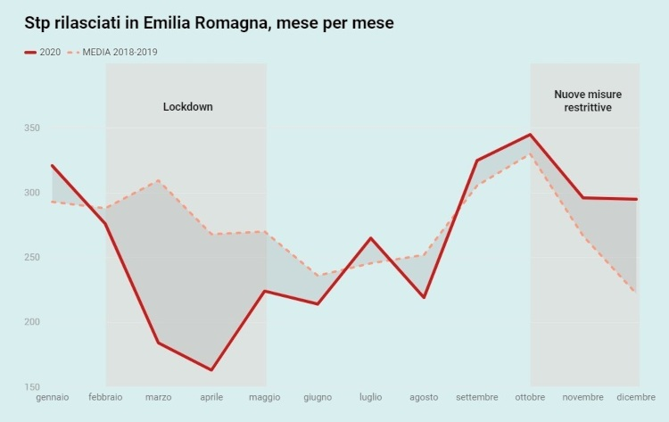
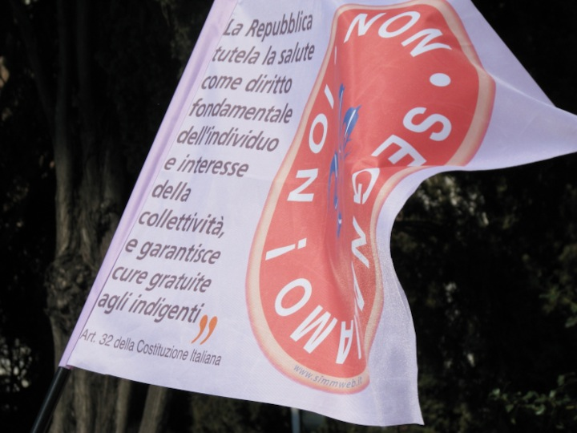

Un'inchiesta sull'accesso alle cure delle popolazioni in fragili in Italia durante la pandemia
Il codice Stp è la porta d’accesso al diritto alla salute per gli stranieri provenienti da paesi extra Ue senza permesso di soggiorno o documenti e in condizioni di fragilità e vulnerabilità. Non si sa quanti stp siano attivi in Italia in questo momento, perché non tutte le regioni hanno anagrafi digitali e i punti di rilascio sono molteplici. Ma nel pieno dell’emergenza sanitaria, il rilascio dei codici è rallentato rispetto ai due anni precedenti. [continua a leggere...]
"Il problema che si è manifestato in maniera prepotente nella gestione della pandemia è stato il fatto di lasciare in secondo piano molte categorie di persone. Moltissime procedure messe in piedi per la gestione dell’emergenza sanitaria non hanno tenuto conto dell’esistenza di Stp e tesserini Eni e altri tipi di permesso di soggiorno. E la mancanza di considerazione di questi due titoli di accesso al sistema sanitario nazionale ha reso quasi impossibile per i titolari l’accesso alla diagnosi, quindi ai tamponi e alla vaccinazione” - Cecilia Fazioli, direzione sanitaria dell’Istituto nazionale per la promozione della salute delle popolazioni migranti e per il contrasto delle malattie della povertà (Inmp) [continua a leggere...]
In Italia l’assistenza sanitaria si basa sui principi di universalità, eguaglianza ed equità, ma questo non significa che, nei fatti, tutti abbiano accesso alle cure allo stesso modo. Per esempio, se non hai i documenti, o una casa in cui vivere legalmente e fissare la residenza, non puoi avere una tessera sanitaria. E senza una tessera sanitaria non puoi avere un medico di famiglia. Puoi solo andare in pronto soccorso. [continua a leggere...]
A fine giugno 2021, sei mesi dopo la somministrazione della prima dose di vaccino anti Covid-19 in tutta Europa, la questione in Italia è ancora riuscire a vaccinare anche chi non ha una tessera sanitaria e un codice fiscale. E se per senzatetto, braccianti e richiedenti asilo molte regioni hanno messo o stanno mettendo in piedi collaborazioni con le associazioni che li seguono per riuscire a vaccinarli (come la Lombardia e la Sicilia), la maggior parte dei sistemi di prenotazione regionali continua a non prevedere la possibilità di prenotare la somministrazione con codici Stp, Eni e codici provvisori (come quelli forniti per esempio alle badanti bloccate da un anno nel limbo della sanatoria 2020).[continua a leggere...]
Con questo strumento puoi provare a conoscere meglio le persone che hanno richiesto e ottenuto un Stp nel 2020 in Emilia-Romagna e in Lazio: da dove vengono, quanti anni hanno, il lore genere, dove sono entrati in contatto con le strutture sanitarie. [prova il tool]